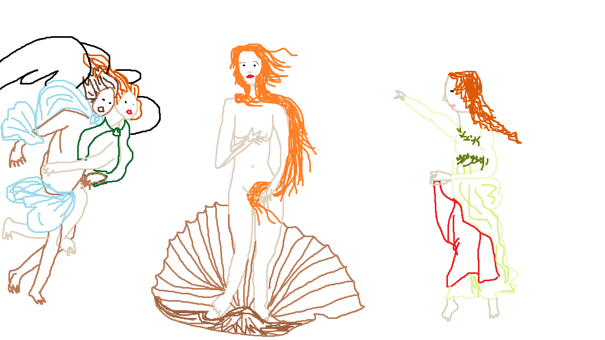
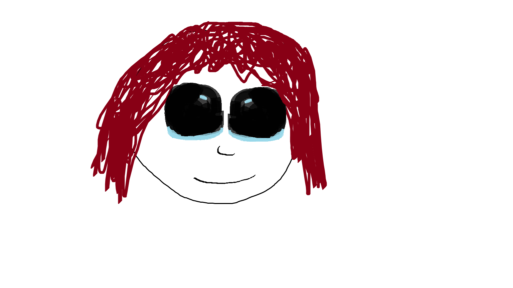
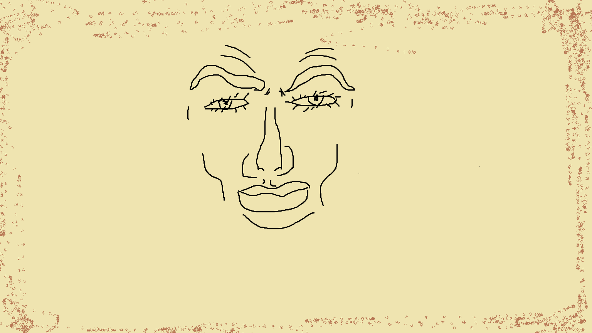

Kõik teevad reposse selle lehe muutmiseks OMA ERALDI BRANCHI
Master branchi (kus see leht hetkel asub) MUUTA EI TOHI
Iga inimene teeb oma branchis, oma ülesanne 4 lehele, koduselt, lehekülje, mis kirjeldab
ära vastava inimese lemmikkunstniku. Olgu ta siis klassikaline kunstnik või online insta artist vms.
Kunstniku kohta tahaks teada
Sandro Botticelli
Kõigepealt õppis ta oma venna Antonio juures kullassepaks, umbes 1462. aastal asus Botticelli õppima Filippo Lippi juurde. Paljud tema varased teosed on minevikus omistatud Lippile. Teda mõjutas ka Masaccio teoste monumentaalsus, aga Lippilt õppis ta intiimsemat ja üksikasjalikumat kujutusviisi. 1470. aastaks oli Botticellil juba oma töökoda. Juba tema varastes teostes on arusaadav tema stiil, mille juurde kuuluvad teose vähene reljeefsus, kujutiste selged kontuurid ning valguse ja varju tugevate kontrastide vältimine.
Botticelli maalidelt on selgesti väljaloetav renessansiajastu naise iluideaal. Botticelli naismodellid ei ole üldiselt teada. Kuulujuttude järgi oli Botticelli paljudel maalidel kujutanud oma armastatut Simonetta Vespuccit, keda üldiselt nimetati Firenze kõige ilusamaks naiseks. Nähtavasti ei vasta see tõele, sest Vespucci suri 1476, tükk aega enne nende maalide alustamist, mille modelliks ta väideti olevat. Peale selle ei maalinud Botticelli kõiki oma maale algusest lõpuni ise, vaid osa etappe tegid teised tema töökoja töötajad.
"Primavera"
"Venuse sünd"
"Minu pilt"

"@Bun0nTheMoon" (Twitter-is)
Minu arvates, ta lihtsalt leidis huvi selles, sest tal ei olnud midagi paremat teha ¯\_(ツ)_/¯
Mitut aastat (ma ei tea täpselt)
Pastelltoone, peene joonpilt
Minu arvamus
Minu arvates on tema kunst ilus, tal on hea anatoomia õppused selgelt nähtavad ja ilusad värvi valikud
Galerii
Mida ma tegin (traced asf)
Nimi: Margaret Keane
Sünnikuupäev: 15. september 1927
Surmakuupäev: 26. juuni 2022
Kaua ta kunstnikuna tegeles?
Üle 60 aasta.
Mis stiile valdas?
Suured silmad
Popkunst
Lowbrow/Pop sürrealism
Sürrealism
Minupoolne ülevaade
Oskab maalida, väga hea kunstnik.

Leonardo da Vinci Dorian Tammeveski
Minu valitud kunstnik on Leonardo da Vinci.
Leonardo oli ja on peamiselt tuntud maalikunstnikuna.
Isa õpetas ta Firenzes tuntud Andrea del Verrochio töökojas joonistama, sealt tekkis huvi kunsti vastu.
Ta tegeles kunstiga aastate 1470–1519 vahel.
Renessanss, High Renaissance, Italian Renaissance
Siin on minu Kunst:
Da Vinki
Lühikokkuvõte
Itaalia kõrgrenessansi suurmeister Leonardo da Vinci (1452–1519) oli mitmekülgselt andekas ning võimekas väga paljudel aladel: Vinci oli maalikunstnik, skulptor, arhitekt, ent ka muusik, luuletaja, insener ja loodusteadlane. On säilinud tuhandeid lehekülgi Vinci joonistuste ja märkmetega, millest nähtub, et tema insenerimõte jõudis oma ajast kaugele ette. Vinci oli loomult katsetaja, tema huvide paljus takistas täielikku pühendumist maalikunstile. Seetõttu on tema säilinud teoste arv väike. Nooruses oli Vinci Firenzes nimeka skulptori Verrocchio õpilane ning sai 1472. aastal maalijate gildi liikmeks. Hiljem elas ja töötas Vinci Milanos, Firenzes ja Roomas. 1517. aastal suundus Vinci kuningas François I kutsel Prantsusmaale,
kus ta ka suri.
Portfoolio
Da vinci kõige kuulsam maaling on: "Mona Lisa" ja minu lemmik maaling temalt "Püha Õhtusöömaaeg "
Da vinci stiil on põhineb reallismist, kus iga väike detail loeb. Seetõttu on ta ka minu lemmik, kuna realism on surnud modernses kunstis välja.
Tema iga kuulus maaling on magnum opus ja selliseid on tavaliselt inimesel ainult üks.
Minu Arvamus
Mina olen ise inimene kes armastab klassikalisi asju ning da vinci on kõige ehtsem versioon sellest.
Tema maalingud on ilusad ning näitavad palju emotsioone, isegi kui pilt on pilt, pildil olev kehakeel.
Näitab rohkem kehakeelt kui mingi näidend.
Minu Attempt
Mina joonistasin inimsese perfektseid näojooni

Simon Sassain'i lemmikkunstnik: Alex Grey
Kes ta on? Alex Grey on Ameerika visionäär kunstnik, tuntud oma spirituaalsete ja psühhedeelsete maalide poolest.
Kuidas ta kunstini jõudis? Alex Grey huvi kunsti vastu tekkis lapsepõlves ning ta jätkas kunstiõpinguid Columbus'i Kunsti- ja Disainikolledžis ning Bostoni Kaunite Kunstide Muuseumikoolis.
Kaua ta kunstnik olnud on? Alex Grey on aktiivselt kunstiga tegelenud üle 40 aasta.
Mis stiile ta kasutab? Ta on tuntud oma detailsete maalide poolest, mis sageli hõlmavad inimkeha anatoomiat, spiritualismi ja psühhedeeliat.
Näiteid tema töödest:
Minu ülevaade tema loomingust: Alex Grey looming on sügavalt spirituaalne ja mõtlemapanev, detailirohked maalid, mis annavad edasi tunnet füüsilise ja metafüüsilise ühendusest.
Minu MSPaint rekreatsioon: Siin on minu katse matkida Alex Grey stiili: